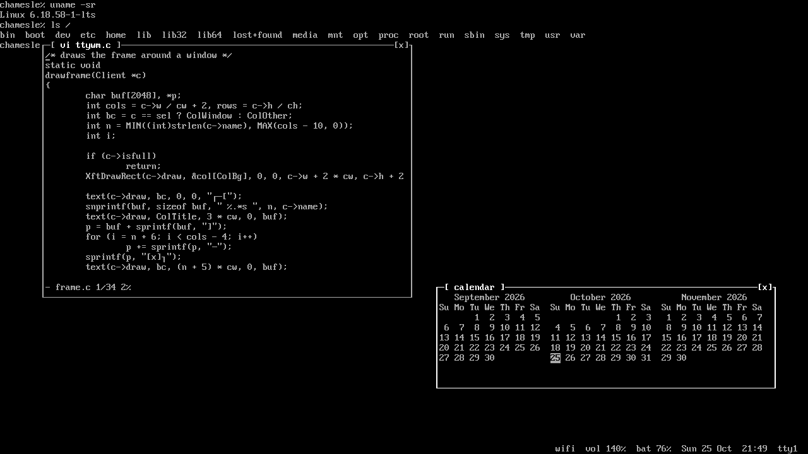
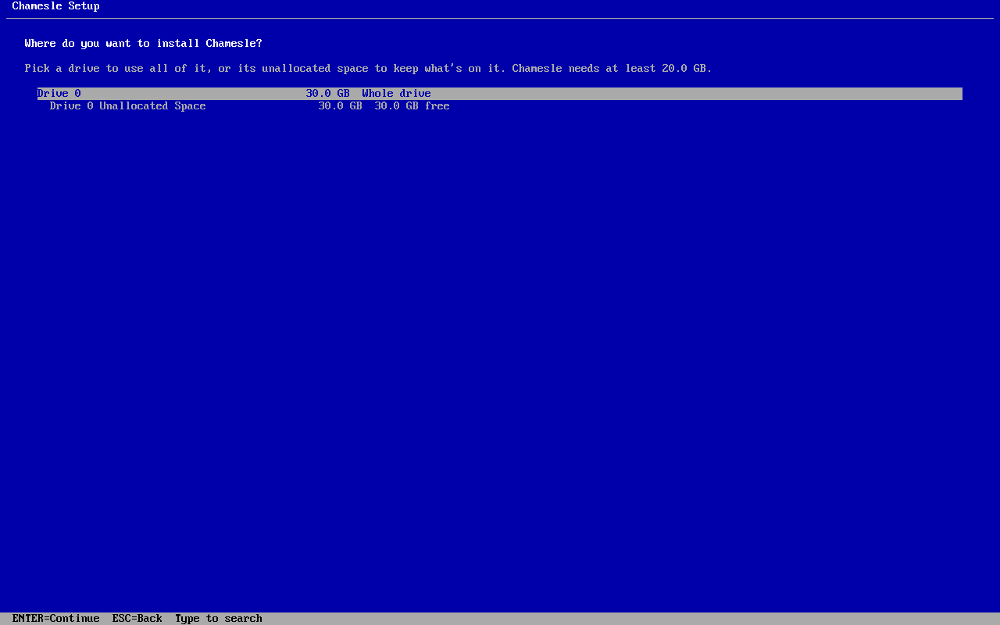

Xfce out now

The one to start with. Light on memory, and set up like Windows: one taskbar at the bottom, start menu bottom left (or press the Windows key), tray and clock bottom right. Glass window frames and taskbar, Oxygen icons and the Inter font.
Good for: most people, older laptops, anyone coming from Windows. 2 GB RAM is fine.
MATE out now

The desktop Linux Mint's MATE edition is built on, rock solid and very light. Same glass look as Xfce, with Mint's own start menu bottom left (the Windows key opens it too), window buttons along the bottom and the tray and clock on the right.
Good for: old machines, netbooks, people who like things to stay where they put them.
Cinnamon out now

Linux Mint's own desktop, the most polished of the Windows-style ones: smooth effects, a great start menu and pinned apps on the taskbar, just like Windows. Same glass look and the same apps underneath.
Good for: Windows switchers with a computer from the last 8 years or so. 4 GB of RAM or more.
GNOME out now

Clean, modern, and different from Windows: one top bar, an overview with all your windows, and a dock at the bottom that gets out of the way when a window needs the room. Tray icons work, windows have minimise and maximise buttons, and the touchpad clicks with a tap. Works great on touchscreens. The first edition of 0.3.
Good for: people who want something new, laptops with touchpads.
Astro out now

The first Flavor: the GNOME edition, set up for looking at the sky. Stellarium shows the sky from where you are, tonight or any night. KStars draws star charts and drives your telescope. Siril stacks and cleans up your astrophotos, and Gpredict tells you when the ISS flies over. The desktop is dark and turns warm at night, so your eyes stay used to the dark. The wallpaper is the Webb telescope's “Cosmic Cliffs” (NASA, ESA, CSA, STScI).
Good for: amateur astronomers, astrophotographers, anyone curious about what's up there. 4 GB of RAM or more.
KDE Plasma out now

A start menu, a taskbar along the bottom and the clock in the corner, so it feels familiar from the first minute. Then you can change almost anything: panels, widgets, window behaviour, the whole look. Real glass windows and taskbar with the desktop blurred through them, Dolphin for your files and the Crete coast on the desktop.
Good for: tinkerers, gamers, anyone with 4 GB of RAM or more.
Ranni new

KDE Plasma set up to feel like a Mac. A menu bar along the top with the open app's menus in it, a dock at the bottom that gets out of the way of your windows, and the window buttons on the left. Press Super+Space to search for apps, files and settings, like Spotlight. The wallpaper is the Khongoryn Els dunes in the Gobi (Bernard Gagnon, CC0).
Good for: people coming from a Mac, anyone who likes a dock. 4 GB of RAM or more.
Play new

The KDE Plasma edition, ready for games. Steam is installed with it, so it's there the moment Chamesle starts, and Proton runs most Windows games in it. Controllers work when you plug them in, and GameMode gives games the full speed of your processor while they run. The wallpaper is the northern lights over Lofoten (Johannes Groll, CC0).
Good for: gamers. 8 GB of RAM.
TTY new

A Flavor for people who like the console. Every screen is a full screen shell in the real console font and
colours, and windows float on top of it in frames drawn with box characters. Super+1 to Super+9 switch between
tty1 and tty9, and the bottom line shows the network, volume, brightness, battery and the time. Super+arrows
put windows side by side, notifications pop up in a frame, and Super+L locks it with a login prompt. It runs
on ttywm, our own window manager. The settings are one file in plain words, like
super+w = firefox. Want it on another edition? Run sudo apk add ttywm and pick
ttywm on the sign-in screen.
Good for: terminal people, old and slow computers, anyone who misses DOS.
Server new

Chamesle without a desktop, for a computer you reach over the network. Pick Server in Jiggity and
SSH is on from the first start. Disk tools, tmux, vim and htop are in. If
you ever want windows, type startx and you get ttywm.
Good for: home servers, old PCs in a cupboard, learning how Linux works underneath.
Not sure?
Get Xfce. It's the most polished one and runs on pretty much anything. MATE is just as easy, so if you already know it from Mint, pick that.